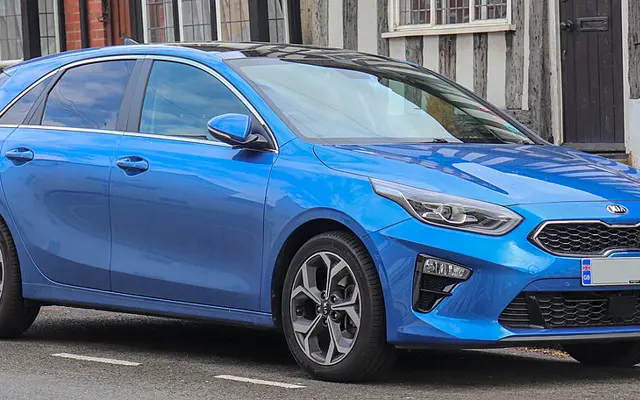

Par Motor › Precios por modelo › Kia Ceed y ProCeed
Precio de segunda mano · noviembre de 2026¿Cuánto vale un Kia Ceed y ProCeed de segunda mano?

Precio justo estimado de un Kia Ceed y ProCeed usado en España, año por año, con los kilómetros normales para su edad y en buen estado: de 4.300 € a 29.700 €. Para tasar el tuyo con sus kilómetros reales y su estado, usa el tasador gratis.
Precios del Kia Ceed y ProCeed por año
Ceed I (2007–2012)
Precio de nuevo: 1.4 105 CV, 15.000 € · 1.6 CRDi 115 CV, 17.500 € · 1.6 122 CV, 16.500 €
| Año | Km normales | 1.4 105 CV · Gasolina | 1.6 CRDi 115 CV · Diésel | 1.6 122 CV · Gasolina |
|---|---|---|---|---|
| 2012 | 100.000 km | 6.200 € | 7.000 € | 6.800 € |
| 2011 | 100.000 km | 5.700 € | 6.500 € | 6.300 € |
| 2010 | 100.000 km | 5.400 € | 6.100 € | 5.900 € |
| 2009 | 100.000 km | 5.000 € | 5.600 € | 5.500 € |
| 2008 | 100.000 km | 4.700 € | 5.300 € | 5.100 € |
| 2007 | 100.000 km | 4.300 € | 4.900 € | 4.800 € |
Ceed II (2012–2018)
Precio de nuevo: 1.4 100 CV, 16.000 € · 1.6 CRDi 128 CV, 20.000 € · 1.6 GDi 135 CV, 18.000 €
| Año | Km normales | 1.4 100 CV · Gasolina | 1.6 CRDi 128 CV · Diésel | 1.6 GDi 135 CV · Gasolina |
|---|---|---|---|---|
| 2018 | 100.000 km | 8.300 € | 11.400 € | 9.300 € |
| 2017 | 100.000 km | 8.100 € | 11.200 € | 9.100 € |
| 2016 | 100.000 km | 7.900 € | 10.500 € | 8.900 € |
| 2015 | 100.000 km | 7.700 € | 9.800 € | 8.600 € |
| 2014 | 100.000 km | 7.500 € | 9.100 € | 8.400 € |
| 2013 | 100.000 km | 7.000 € | 8.500 € | 7.900 € |
| 2012 | 100.000 km | 6.600 € | 8.000 € | 7.400 € |
Ceed III (2018–hoy)
Precio de nuevo: 1.0 T-GDi 120 CV, 20.000 € · 1.6 CRDi 136 CV, 23.000 € · PHEV (enchufable) 141 CV, 32.000 €
| Año | Km normales | 1.0 T-GDi 120 CV · Gasolina | 1.6 CRDi 136 CV · Diésel | PHEV (enchufable) 141 CV · Híbrido enchufable |
|---|---|---|---|---|
| 2026 | 5.000 km | 20.900 € | 22.800 € | 29.700 € |
| 2025 | 20.000 km | 18.400 € | 19.500 € | 25.400 € |
| 2024 | 35.000 km | 17.400 € | 18.200 € | 23.700 € |
| 2023 | 50.000 km | 16.400 € | 17.000 € | 22.100 € |
| 2022 | 65.000 km | 15.500 € | 14.600 € | 20.600 € |
| 2021 | 80.000 km | 14.100 € | 13.400 € | 18.500 € |
| 2020 | 95.000 km | 12.500 € | 13.400 € | 16.200 € |
| 2019 | 100.000 km | 12.000 € | 13.200 € | 15.200 € |
| 2018 | 100.000 km | 11.900 € | 13.100 € | 14.900 € |
Kilómetros normales: 15.000 al año en gasolina, híbridos y eléctricos, y 20.000 en diésel, con un máximo de 100.000 km (por encima no tasamos: el precio depende demasiado del historial de cada coche). Cifras redondeadas a 100 €.
Preguntas frecuentes
¿Cuánto vale un Kia Ceed y ProCeed de segunda mano?
Según el año, la versión y los kilómetros, un Kia Ceed y ProCeed usado vale hoy de 4.300 € a 29.700 € en España. El más barato de nuestra tabla es un 1.4 de 2007 (4.300 €) y el más caro un PHEV (enchufable) de 2026 (29.700 €). Son precios justos estimados entre particulares y profesionales, con los kilómetros normales para su edad y en buen estado.
¿Cuánto valor pierde un Kia Ceed y ProCeed al año?
Con unos años encima, un Kia Ceed y ProCeed pierde alrededor de un 5 % de su valor cada año (calculado sobre el 1.0 T-GDi de la generación Ceed III). Los primeros años la caída es mayor y a partir de los 70.000 km se acelera.
¿Qué motorizaciones tiene el Kia Ceed y ProCeed?
En nuestra base de datos hay versiones gasolina, diésel y híbrido enchufable, en 3 generaciones: Ceed I, Ceed II y Ceed III.
¿Cómo sé si me piden demasiado por un Kia Ceed y ProCeed?
Abre el tasador de Par Motor, elige el Kia Ceed y ProCeed, el año y los kilómetros reales, y escribe lo que te piden. Te diremos si está por debajo del precio justo (chollo) o por encima (caro). Es gratis y no pide registro ni matrícula.
Otros Kia
Compara su coste real
El precio de compra es solo una parte. Mira cuánto te costaría al mes con combustible, seguro, neumáticos, mantenimiento y lo que pierde de valor.
Abrir el comparador →